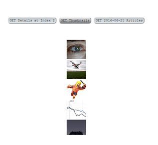
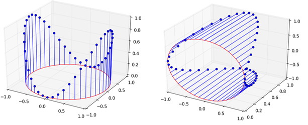
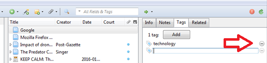
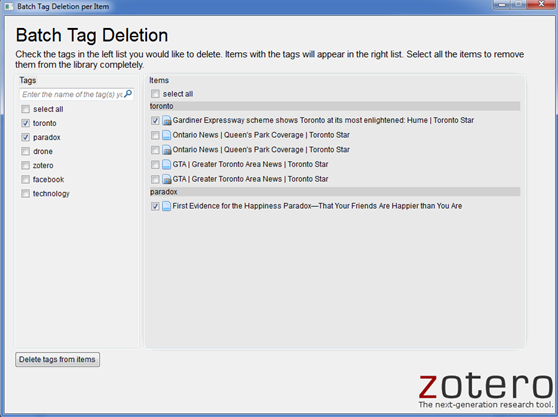
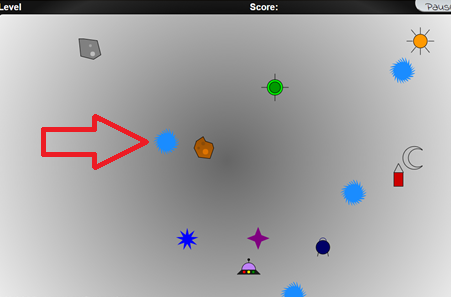

CourseTutor
A responsive MEAN stack application for connecting students with tutors. Users are able to sign up through OAuth, search for courses,
post their objectives, rate comments and users, message other users, and add or find recommended contacts.
This project was my first exposure to full stack development and application performance analysis.
New York Times REST API
A REST API that parses NY Times data provided in JSON format. The server is set up using Node.js and the front-end can be accessed on localhost:8080.
Documentation is provided; example requests include GET articles by specific date and index. A sample call to GET thumbnails would retrieve img URLs
and display them as a list of thumbnails using AJAX, without the need of a full page refresh.
3D Stem Plot
Worked in a Scrum team of 5 to implement and document a new feature in matplotlib using Python. This feature allows users to generate stem plots in a 3D view
and rotate the graphs by specifying a fixed axis. The project followed an agile sprint plan and image tests were generated to verify the correct
display and orientation of plots. In the process, I learned about software architecture and how to tackle a large open source project.
Zotero Plugin
Worked in an agile team to develop a batch tag editing plugin for the Zotero standalone software. The software supports single processing of tags, e.g. in the image below, the user must click on the '-' button beside each tag to remove it from a specific resource in their library. 
According to our client's request, we provided an intuitive interface which allows the user to edit and search by both tag name and resource name (see sample below).
The plugin's capabilities include batch add, delete, rename, and merging of tags.

Black Hole Game
Implemented an HTML5 canvas game that spawns black (and blue) holes on the screen and sucks in objects that get close to them. The user must click on the holes to destroy
them before all the objects are sucked in or before time is up. The game progresses in difficulty as holes are being generated faster and more frequently.